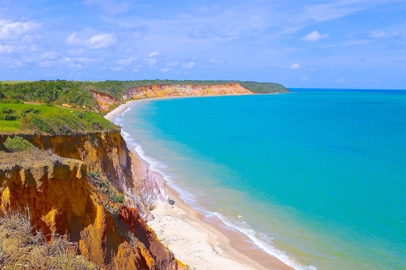
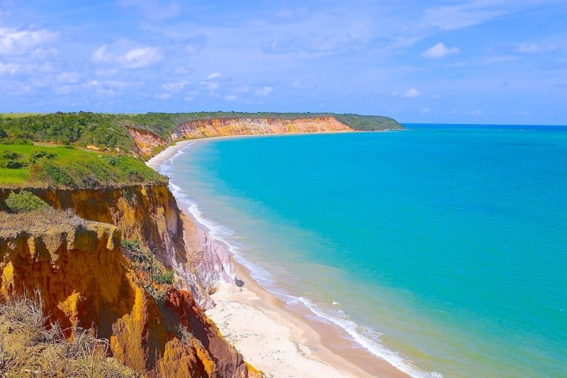

Guiamos você pelas melhores experiências turísticas.
Somos especialistas em proporcionar experiências memoráveis, apresentando destinos incríveis e garantindo roteiros exclusivos para cada viajante.
Conheça as cidades mais incríveis com guias experientes.
Planejamos o melhor itinerário para você.
História e cultura local com conhecimento profundo.
Experimente os sabores autênticos de cada destino.
Viaje com conforto e segurança para qualquer destino.
✨ Maragogi: O Caribe Brasileiro te Espera!strong> ️
Águas cristalinas, piscinas naturais incríveis e um mar azul-turquesa de tirar o fôlego! Em Maragogi, você pode mergulhar entre corais, nadar com peixes coloridos e relaxar em praias paradisíacas. Viva essa experiência única na Costa dos Corais! ☀️
Distância da Capital: 125 km
Praia do Francês – Agito e Beleza em um Só Lugar!
A apenas 25 km de Maceió, a Praia do Francês é um paraíso que agrada a todos! De um lado, mar calmo e piscinas naturais perfeitas para relaxar. Do outro, ondas ideais para surfistas. Com quiosques à beira-mar e um clima vibrante, é o destino perfeito para curtir o dia!
️ Praia do Gunga – Cores, Aventura e Mar Turquesa!
Entre o mar e a Lagoa do Mundaú, a Praia do Gunga encanta com suas falésias coloridas, coqueirais a perder de vista e águas cristalinas. Passeios de buggy, jet ski e caiaque garantem a diversão. Um cenário de cinema esperando por você!
Barra de São Miguel – Tranquilidade e Natureza Exuberante!
Um refúgio paradisíaco com águas calmas, piscinas naturais e um pôr do sol inesquecível. Ideal para famílias e quem busca sossego. Além disso, é o ponto de partida perfeito para explorar o Gunga de barco ou lancha.
Três destinos, uma certeza: momentos inesquecíveis em Alagoas! ✨
Distância da Capital: 43 km
✨ São Miguel dos Milagres: Um Paraíso Intocado!strong> ️
Mar calmo, piscinas naturais e uma vibe rústica que encanta! Em São Miguel dos Milagres, você encontra praias paradisíacas, passeios de jangada e um refúgio perfeito para relaxar e se conectar com a natureza. Descubra esse tesouro do litoral alagoano! ☀️.
Distância da Capital: 100 km
✨ Praia de Ipioca: Tranquilidade e Beleza em Maceió! ️☀️strong>
Areias brancas, mar azul-turquesa e um cenário paradisíaco a poucos minutos de Maceió! A Praia de Ipioca é perfeita para quem busca sossego, natureza preservada e um banho de mar relaxante. Venha se encantar com esse refúgio exclusivo!
Distância da Capital: 25 km
️ Paripueira: Seu Refúgio no Paraíso! ☀️strong>
Areias brancas, mar calmo e piscinas naturais cristalinas esperam por você a apenas 30 km de Maceió! Mergulhe com peixes coloridos, explore corais e relaxe em um dos destinos mais encantadores de Alagoas. Vem curtir esse paraíso!
Distância da Capital: 30 km
✨ Praia do Carro Quebrado – O Paraíso Desconhecido!
A apenas 90 km de Maceió, essa praia é um verdadeiro refúgio! Com águas cristalinas, dunas douradas e piscinas naturais, é o lugar perfeito para quem busca tranquilidade e beleza intacta. Ideal para passeios de barco e relaxar em meio à natureza selvagem.
Venha descobrir um dos segredos mais bem guardados de Alagoas! ️✨
Distância da Capital: 90 km
 

️Dunas de Marapé: Um Paraíso de Beleza Natural 🌞
As Dunas de Marapé em Alagoas são um verdadeiro paraíso escondido, com suas dunas douradas 🏖️, águas cristalinas 🌊 e paisagens deslumbrantes. Perfeito para quem busca tranquilidade, oferece caminhadas pelas dunas 🏜️ e um pôr do sol inesquecível 🌅. Um destino ideal para quem quer se conectar com a natureza e viver momentos de paz e aventura.
Distância da Capital: 70 km
Desfrute de uma experiência exclusiva e confortável em seus passeios turísticos. Nosso serviço de transporte privativo é ideal para turistas que buscam segurança, comodidade e um atendimento personalizado durante suas viagens.
Entre em contato e planeje sua viagem dos sonhos.